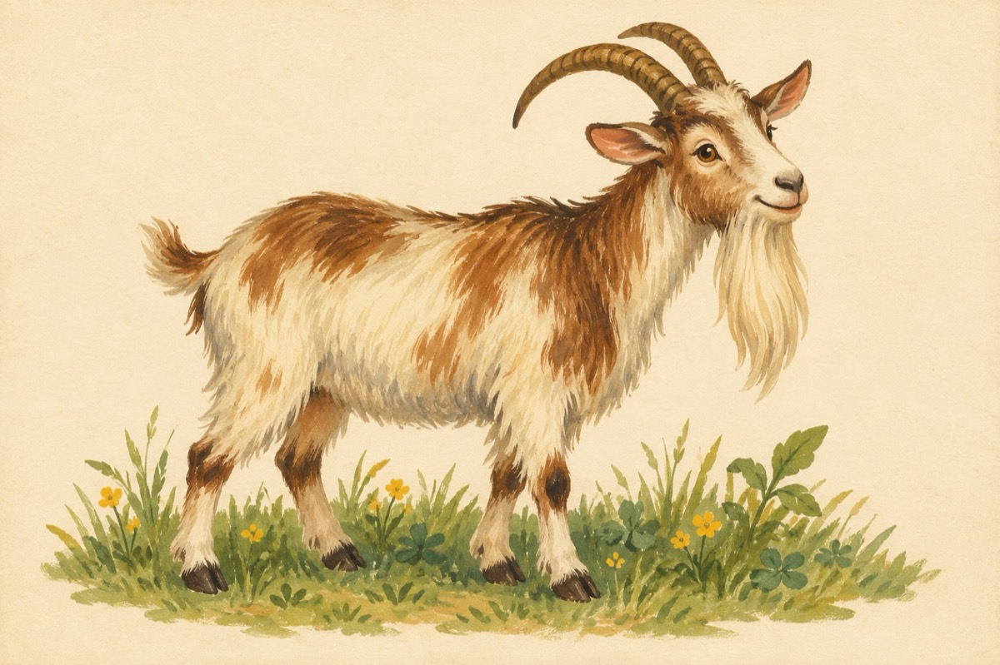

Alfabetul: Dd
D e d, ca orice de
Vrea multă cuprindere
De ce are țapul barbă
Iepurele n-are coadă
De ce Buha e năroadă
Ziua doarme, noaptea pradă
De ce moșul n-are dinți
Și copiii nu-s cuminți
De ce carnea are oase
Și babele nu-s frumoase;
De ce rămâne și se ce
Sau decum, sau deoarece
D-ul leagă și desleagă
Alfabetul de-l întreabă!
Vasile Groza